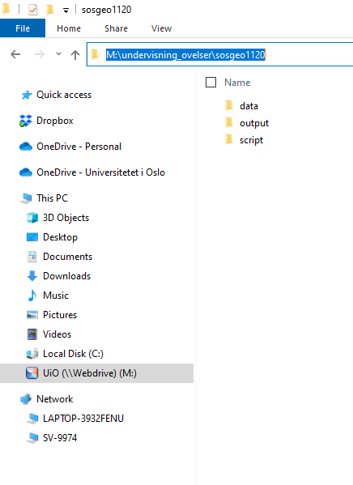
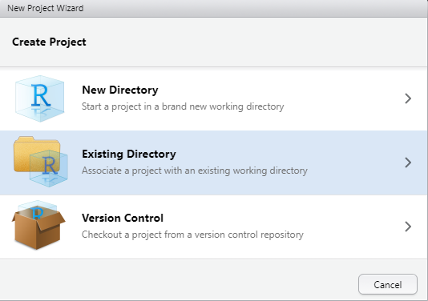
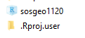

Error in file.exists(pythonPath) :
file name conversion problem -- name too long?2 Installere R og Rstudio
Vi forutsetter grunnleggende kunnskap til bruk av datamaskiner, og hvis du oppdager at det er tekniske ting du ikke får til forutsetter vi at du lærer deg det. Det går også an å spørres seminarleder om hjelp, men gjør det unna tidlig i semesteret. Her er noe av det vi forutsetter:
Laste ned og installere programmer på datamaskinen Lage mapper og mappestruktur på lokal maskin, og holde oversikt over filer på din datamaskin Laste ned en fil direkte til en mappe uten å åpne, herunder lokalisere download-mappen
OBS! Det er mange csv-filer tilknyttet oppgaver i læreboken. Sørg for å laste ned filene uten at de først åpnes i Excel med en gang. Grunnen er at selv om det stort sett går greit, er Excel tilbøyelig til å tenke litt mye selv og kan finne på å forandre datasettet. (Hvis dette skjer på eksamen er du i trøbbel, så unngå det!).
2.1 Installasjon
Installer nyeste versjon av R herfra: https://cran.uib.no/ Du trenger det som heter «base» når man installerer for første gang. Hvis du har R installert på maskinen din fra før, sørg for at du har siste versjon installert. Siste versjon er 4.1.2. Versjon etter 4.0 bør gå bra, men tidligere versjoner vil kunne gi problemer. Installer nyeste versjon av RStudio (gratisversjon) herfra: https://rstudio.com/products/rstudio/download/ Viktig: du må installere R før du installerer Rstudio for Rstudio finner R på din datamaskin og vil gi feilmelding hvis den ikke finner R. Hvis du har en eldre datamaskin og du får feilmelding ved installasjon av RStudio kan du vurdere å installere forrige versjon av Rstudio herfra: https://www.rstudio.com/products/rstudio/older-versions/
R og Rstudio er to programmer er integrert i hverandre og du åpner heretter R ved å åpne RStudio. Merk: R er navnet på programmeringsspråket og programmet som gjør selve utregningene. Det kjører fra en kommandolinje og er ikke veldig brukervennlig alene. RStudio er et “integrated development environment” (IDE) til R. Det integrerer R med en konsoll, grafikk-vindu og en del andre nyttige ting. Det gjør det lettere å bruke R.
Det finnes også andre IDE for R, men vi skal bruke RStudio gjennomgående på dette kurset. (RStudio inneholder også masse annen funksjonalitet vi ikke trenger til dette kurset).
Du skal også installere noen R-pakker. Det er omtalt i et annet kapittel med oversikt over hva det er og hvilke du trenger.
2.1.1 Ikke alle feilmeldinger er like nøye
Mange av dere vil få en feilmelding av denne typen når dere starter R:
Ikke bry dere om akkurat den. Det spiller ingen rolle.
2.1.2 Spesielt om Windows-maskiner: installer Rtools
Hvis du jobber på en Windows-maskin må du også installere Rtools herfra: https://cran.r-project.org/bin/windows/Rtools/
2.1.3 Spesielt om Mac-maskiner
R skal normalt installere på Mac uten problemer. Noen har fått beskjed om at de også trenger å installere XQuartz eller Xcode. I så fall installerer du de også. Se mer informasjon her: https://cran.r-project.org/bin/macosx/tools/
2.1.4 Spesielt om Linux-maskiner
Har du Linux vet du antakelig hva du driver med. Siste versjon av R og Rstudio kan antakeligvis installeres fra distroens repository.
2.1.5 Spesielt om Chromebook
Chromebook kjører et annet operativsystem og R vil ikke uten videre fungere. Derimot kan man på de fleste slike maskiner åpne opp for å kjøre Linux og da kan man installere linux-versjon av R og Rstudio. https://blog.sellorm.com/2018/12/20/installing-r-and-rstudio-on-a-chromebook/ Eller se nedenfor hvordan du kan kjøre R i skyen.
2.2 Hvis du har problemer med installasjon som vi ikke får løst
2.2.1 Rstudio workbench i UiO-skyen
Hvis du opplever uløselige problemer med å kjøre R og Rstudio på din datamaskin, så finnes det en krise-løsning. Rstudio har også en versjon som kjører i skyen via nettleser. UiO har en slik versjon installert på sine servere som vi kan bruke. Du logger da inn på Rstudio Workbench med ditt Feide brukernavn og passord. (Det er sendt inn beskjed om at alle på SOS4020 skal ha tilgang, og håper det er i orden nå eller veldig snart).
Rstudio workbench fungerer på samme måte som Rstudio ellers, men du kan ikke installere pakker selv. Det viktigste er tilgjengelig allerede, så det burde gå fint. I fanen “Files” kan du lage en mappestruktur og laste opp/ned filer etter behov.
OBS! Workbench-løsningen har et helt trivilet sikkerhetsnivå for data. Den er kun godkjent for å bruke grønne data. Det betyr at du ikke kan jobbe med data som ikke er åpne med denne løsningen.
2.3 Oppsett og forberedelser
Dette oppsettet gjelder både hvis du har en lokal installasjon og for skyløsninger. Utseendet spiller ingen rolle, og R kan også fungere uten å opprette «projects» som beskrevet her. Men det er lettere å bruke og du har bedre orden hvis du gjør dette.
2.3.1 Utseende i Rstudio
Endre gjerne på oppsettet i RStudio ved å gå til Tools og deretter Global options, så Pane Layout.

Det spiller ingen rolle for funksjonaliteten hvor du har hvilken fane, men her er et forslag.

Dette kan også endres senere og har altså bare med hvordan Rstudio ser ut.
2.4 Rstudio projects
Når du åpner Rstudio skal du alltid åpne som «project» (se video med instruksjon og i R4DS (Wickham and Grolemund (2017))). Arbeidsområdet er da definert og du kan åpne data ved å bruke relative filbaner, dvs. at du oppgir hvor dataene ligger med utgangspunkt i prosjektmappen. Se kursvideo og instruksjoner i R4DS og gjør følgende:
Opprettet mappestruktur med prosjektmappen som øverste nivå og egne undermapper for data, script, og output.
2.5 Åpne RStudio og opprett et .Rproject

Bruk funksjonen getwd() og se at du har riktig filbane til arbeidsområdet. Hvis du ikke er sikker på hva det betyr, må du spørre noen eller finne det ut på annen måte!
Det første dere må gjøre er å sørge for å ha orden i datasett, script og annet på din egen datamaskin. Å f.eks. lagre alle filer på skrivebordet bør du aldri gjøre, og særlig ikke i dette kurset eller når man jobber med større prosjekter og datasett.
For dette kurset skal du ha en mappestruktur med en hovedmappe for dette kurset og tilhørende undermapper. Det spiller ingen rolle hvor på datamaskinen du legger disse mappene, men du må vite hvor det er. Lag første en mappe med et hensiktsmessig navn for kurset, og innunder denne mappen lager du tre andre mapper med navnene data, output og script. Du kan ha andre mapper i tillegg ved behov. Det kan se slik ut:

Du skal opprette et Rstudio-prosjekt for hele kurset. Dette er beskrevet nærmere i R4DS i kapittel 6. Når du har åpnet RStudio skal du aller først klikke New Project.
Deretter klikker du du «Existing Directory»

Klikk «Browse» og bla deg så frem til mappen du har laget for dette kurset.
RStudio-prosjektet ligger så i den mappen du har valgt. I filutforsker på datamaskinen vil nå disse to filene dukke opp:

For å starte R videre i dette kurset skal du dobbeltklikke det første ikonet, så vil R åpne seg med riktig arbeidsområde. Mappen .Rproj.user skal du ikke røre. I RStudio vil du se at prosjektet er åpnet ved at det i øvre høyre hjørne er dette ikonet:

En stor fordel med å bruke projects er at du kan flytte hele mappen til et annet sted, eller til en annen datamaskin og alt vil fungere akkurat som før. Hvis du bruker en skytjeneste (OneDrive, Dropbox etc) vil du kunne åpne Rstudio projects på samme måte fra flere maskiner.
Wickham, Hadley, and Garrett Grolemund. 2017. R for Data Science. Beijing, China: https://r4ds.had.co.nz/index.html; O’Reilley.